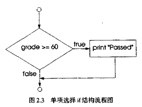
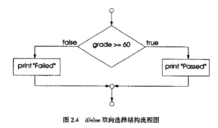

选择结构在不同操作之间选择。例如，假设考试成绩60分算及格，则下列伪代码：
if student's grade is greater than or equal to 60 print "Passed" else print "Failed"
确定“学生成绩大于或等于60分”是true或false，如果是true，则该生及格，打印“Passed”字样，并顺序“执行”下一个伪代码语句(记住，伪代码不是真正的编程语言)。如果条件为false，则忽略打印语句，并顺序“执行”下一个伪代码语句。注意这个选择结构第二行的缩排，这种缩排是可选的，但值得提倡，因为它能体现结构化程序的内部结构。将伪代码变成C++代码时，C++编译器忽略空格、制表符、换行符等用于缩排和垂直分隔的空白字符。
在整个程序中坚持用合理缩排规则能大大提高程序可读性。建议用固定制表长度即1/4英寸或三个空格的缩排量。 上述伪代码的if语句可以写成如下C++语句：
if(grade>=60)
cout<<"Passed";
else
cout<<"Failed";
注意C++代码与伪代码密切对应，这是伪代码的一个属性，使得其成为有用的程序开发工具。
伪代码常用于程存设计期间“构思”程序，然后再将伪代码程序转换为C++程序。
图2.3的流程图演示了单项选择if结构。这个流程图包含流程图中最重要的菱形框、也称判断框，表示要进行判断。判断框包含一个表达式(如条件)，可取true或false值。判断框产生两条流程，一条指向表达式为true时的走向，一条指向表达式为false时的走向。第1章曾介绍过，可以根据包含关系或相等运算待的条件作出判断。实际上，可以针对任何表达式作出判断，如果表达式求值为0，则当作false，如果表达式求值非0，则当作true。C++草案标准提供bool数据类型，表示true和false。关键字true和false表示bool数据类型的值。
注意，if结构也是单入/单出结构。稍后将会介绍，其余控制结构的流程图(除了小圆框和流程之外)也只能包含表示所要操作的矩形框和表示所要判断的菱形框。这是我们强调的操作/判断编程模型(action/decision model of progamming)。可以想像有七个框，各包含七种控制结构中的一种控制结构，这些控制结构是空的，矩形框和菱形框中什么也没有。程序员的任务就是根据算法需要用堆栈和嵌套两种方法组合这几种控制结构，然后在这些框中填入算法所要的操作和判断，从而生成程序。下面介绍编写操作和判断的各种方式。

if选择结构只在条件为true时采取操作，条件为false时则忽略这个操作。利用if/else选择结构则可以在条件为true时和条件为false时采取不同操作。例如，下列伪代码：
if student's grade is greater than or equal to 60 print "Passed" else print "Failed"
在学生成绩大于或等于60时打印“Passed”，否则打印"Failed"。打印之后，都“执行”下一条伪代码语句。注意else的语句体也缩排。
if/eIse选择结构的两个语句体都缩排。 选择的缩徘规则应当在整个程序中认真贯彻执行。不按统一缩排规则编写的程序很难阅读。 编程技巧 2.4
如果有多层缩排，则每一层应缩排相同的空间量。 上述伪代码if/else结构可以写成如下的C++代码：
if(grade>=60) cout<<"Passed"; else cout<<"Failed";
图2.4的流程图很好地演示了if/else结构的控制流程。注意，这个流程图(除了小圆框和流程之外)也只能包含表示所要操作的矩形框和表示所要判断的菱形框。这里我们继续强调操作/判断模型计算，假设框中包含建立C++程序所需的空白双项选择结构。程序员的任务就是根据算法需要用堆栈和嵌套两种方法组合各种控制结构，然后在这些框中填人算法所要的操作和判断，从而生成程序。
C++提供条件运算符(?：)，与if/else结构密切相关。条件运算符是C++中惟一的三元运算符(thrnary operator)，即取三个操作数的运算符。操作数和条件运算符一起形成条件表达式(conditionalexpression)。第一个操作数是条件，第二个操作数是条件为true时整个条件表达式的值．第三个操作数是条件为false时整个条件表达式的值。例如，下列输出语句：
cout<<(grade>=60? "Passed":"Failed");
包含的条件表达式在grade＝60取值为true时，求值为字符串“Passed”；在grade>＝60取值为false时，求值为字符串"Failed"。这样，带条件表达式的语句实际上与上述if/else语句相同。可以看出，条件运算符的优先级较低，因此上述表达式中的话号是必需的。

条件表达式酌值也可以是要执行的操作。例如．下列条件表达式：
grade >=60? cout<<"Passed":cout<<"Failed";
表示如果grade大于或等于60，则执行cout<<"Passed"，否则执行cout<<"Failed"。这与前面的if/else结构也是相似的。条件运算符可以在一些无法使用if/else语句的情况中使用。
structure)测试多个选择，将一个if/else选择放在另一个if/else选择中。例如，下列伪代码语句在考试成绩大于或等于90分时打印A．在80到89分之间时打印B，在70到79分之间时打印C，在60到69分之间时打印D，否则打印F。
if studen's grade is greater than or equal to 90
print "A"
else
If student's grade is greater than or equal to 80
print "B"
else
If student's grade is greater than or equal to 70
print "C"
else
If student's grade is greater than or equal to 60
print "D"
else
print "F"
这个伪代码对应下列C++代码：
if(grade>=90)
cout<<"A";
else
if(grade>=80)
cout<<"B";
else
if(grade>=70)
cout<<"C";
else
if(grade>=60)
cout<<"D";
else
cout<<"F";
如果考试成绩大于或等于90分，则前4个条件都为true，但只执行第一个测试之后的cout语句。执行这个cout语句之后，跳过外层if/else语句的else部分。许多C++程序员喜欢将上述if结构写成：
if(grade>=90)
cout<<"A";
else if(grade>=80)
cout<<"B";
else if(grade>=70)
cout<<"C";
else if(grade>=60)
cout<<"D";
else
cout<<"F";
两者形式是等价的。后者更常用，可以避免深层缩排便代码移到右端。深层缩排会使一行的空间太小，不长的行也要断行，从而影响可读性。
嵌套if/else结构比一系列单项选择if结构运行速度快得多，因为它能在满足其中一个条件之后即退出。
在嵌套if/else结构中，测试条件中true可能性较大的应放在嵌套if/else结构开头．从而使嵌套if/else结构运行更快，比测试不常发生的情况能更早退出。
if选择结构体中只能有一条语句。要在if选择结构体中包括多条语句，就要把这些语句放在花括号({})中。放在花括号中的一组语句称为复合语句(compund statement)。复合语句可以放在程序中出现单句语句的任何地方。 下例在if/else结构的else部分包括复合语句：
if(grade>=60)
cout<<"Passed. ";
else{
cout<<"Failed. ";
cout<<"You must take this course again. ";
}
如果grade小于60，则程序执行else程序体中的两条语句并打印：
Failed. You must take this course again.
注意else从句中的两条语句放在花括号中。这些花括号很重要，如果没有这些花括号，则下列语句：
cout<<"You must take this cours again. ";
在if语句else部分之外，不管成绩是否小于60都执行。
忽略复合语句中的一个或两个花括号可能在程序中生成语法错误或逻辑错误。
复合语句可以放在程序中出现单句语句的任何地方，也可以根本不放语句，即放上空语句。空语句就是在正常语句出现的地方放一个分号(；)。
有些程序员喜欢在花括号中输入各个语句之前输入复合语句的开始花括号和结束花括号。这样可以避免丢失一个或两个花括号。
本节介绍了复合语句的符号。复合语句可以包含声明(例如，和main程序体中一样)，如果这，则这个复合语句称为块(block)。块中的声明通常放在块中任何操作语句之前，但也可以和操作语句相混和。第3章将介绍块的用法，在此之前，读者应避免使用块(除了作为main程序体)。